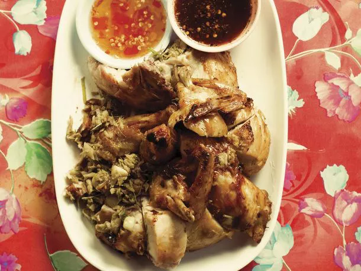

Kai Yaang Whole Roasted Chicken

Description
“I have a long history with Andy Ricker's roasted young chicken (or game hen). It was one of my favorite dinners back when I lived in Portland,
and I still fantasize about driving up to the Northwest just for another taste.
Luckily, now I don't need to spend the gas money (or wait in line). The dish is featured prominently in Ricker's new Pok Pok cookbook,
and it's surprisingly easy to make.”
Ingredients
Sweet Pork
- 1kg boneless pork shoulder, gristle and large pockets of fat trimmed
- 60g plus 1 tablespoon Thai sweet soy sauce
- 60g cup plus 1 tablespoon Thai thin soy sauce
- 75g palm sugar, very coarsely chopped
- 1 teaspoon ground Thai white pepper
Cocount Rice
- 350g uncooked jasmine rice
- 120g unsweetened coconut cream (preferably boxed)
- 1½ tablespoons caster sugar
- ½ teaspoon kosher salt
- 400g water
Papaya Salad
- 4 generous tablespoons medium-size dried shrimp, rinsed and patted dry
- 100g palm sugar
- 1 teaspoon water
- 4 small limes (preferably Key lime), halved through the stem
- 12 grams peeled garlic cloves (about 2 medium cloves), halved lengthwise
- 12 grams fresh stemmed Thai chiles (about 4), preferably red
- 100g longbeans, ends trimmed, cut into 5cm lengths
- 4 tablespoons lime juice (preferably from Key limes or spiked with a small squeeze of Meyer lemon juice)
- 4 tablespoons Thai fish sauce
- 4 tablespoons Naam Makham (tamarind water)
- 550g peeled, shredded green papaya
- 24 cherry tomatoes, halved
- 80g coarsely chopped unsalted peanuts, roasted
Dish
- Fried shallots to garnish
- A few pinches of torn coriander
Method
- For the Sweet pork, cut the pork, with (not against) the grain of the meat, into approximately 12cm-long slabs that are about 2cm thick.
- Combine the pork, both soy sauces, palm sugar, and white pepper in a heavy-bottomed pot and stir to coat the pork.
- Set the pot over medium-high heat, bring the liquid to a strong simmer (make sure it never boils or it’ll burn), then cover the pot and decrease the heat to maintain a steady simmer.
- Cook until the pork is so tender that it breaks easily into shreds when you prod it, about 1 1/2 hours.
- With the pot still on the heat, use a sturdy whisk or large spoon to mash the pork until it’s all in small shreds. Increase the heat, bring the liquid to a steady simmer, and cook, uncovered, until the liquid has evaporated and the shreds glisten and look sticky, like candy, 5 to 20 minutes, depending on how much liquid the pork gave off during cooking.
- If you’re planning to eat it right away, let it cool slightly. Otherwise, let it fully cool, and store it in a covered container in the fridge for up to a week. Reheat it in the microwave or in a pot over very low heat.
- For the cocount rice, put the rice in a fine-mesh strainer set inside a large bowl and fill the bowl with enough cool tap water to cover the rice by an inch or two. Use your fingers to gently stir the rice, then lift the strainer to drain. The water in the bowl will be white and cloudy. Empty the water, set the strainer in the bowl again, and repeat the process until the water that covers the rice is, more or less, clear. You’ll probably have to change the water two or three times. Drain the rice, gently shaking it occasionally, until it is fully dry to the touch, about 15 minutes.
- Combine the rice, coconut cream, sugar, salt, and the 400g cups of water in a rice cooker. Mix well with your hands, then cover, press the button, and let the cooker do its thing.
- Once it’s done, let the rice sit in the rice cooker on the warm setting with the cover on for about 20 minutes. Fluff the rice: Use a fork to gently rake the top few layers of rice to separate the grains, and gradually rake the next few layers and so on, working your way toward the bottom. Try your best not to break or smash the grains. You might see brown flecks of caramelized coconut cream at the bottom—congratulations.
- The coconut rice will stay warm in the rice cooker for several hours.
- For the papaya salad, heat a small dry pan or wok over medium heat, add the dried shrimp, and cook, stirring frequently, until they’re dry all the way through and slightly crispy, about 5 minutes. Set them aside to cool. They’ll keep covered at room temperature for up to 1 week
- Put the palm sugar in a small microwavable bowl, sprinkle on the 1/4 teaspoon of water, cover the bowl with plastic wrap, and microwave on low just until the sugar has softened (not liquefied), 10 to 30 seconds. Pound the mixture in a mortar (or mash it in the bowl) until you have a smooth paste. Covered, it will keep soft for up to 2 days.
- Cut one of the lime halves lengthwise into thirds, then cut the thirds in half crosswise. Set aside 3 of the pieces (reserve the remaining lime for another purpose). Combine the garlic, chiles, and 1 tablespoon of the softened palm sugar in a large clay mortar and pound just until you have a chunky sludge with medium pieces of chile and small but visible pieces of garlic, about 10 seconds.
- Add the 3 lime wedges and pound very lightly, just to release the juice. Add the shrimp, pound lightly (don’t smash or pulverize them), just to release their flavor, then add the long beans and pound lightly to bruise them (they should not break into pieces or totally flatten).
- Add the lime juice, fish sauce, tamarind water, and papaya. Then use the pestle to barely bruise the papaya (lightly pounding at a slight angle, not directly up-and-down) for about 10 seconds, while simultaneously using a large spoon to scoop up from the bottom of the mortar, essentially tossing the papaya, palm sugar mixture, and the other ingredients as you pound. Do not smash the papaya. It should remain crisp. Add the tomatoes and pound lightly, just to release their juice. Add the peanuts and mix briefly with the spoon.
- Transfer the papaya salad to a plate, liquid and all, ready to serve.
- To finish the dish, put a portion of coconut rice on each plate, along with a portion of the sweet pork and papaya salad. Top each portion of pork with a tablespoon full of fried shallots and a sprinkle of coriander.